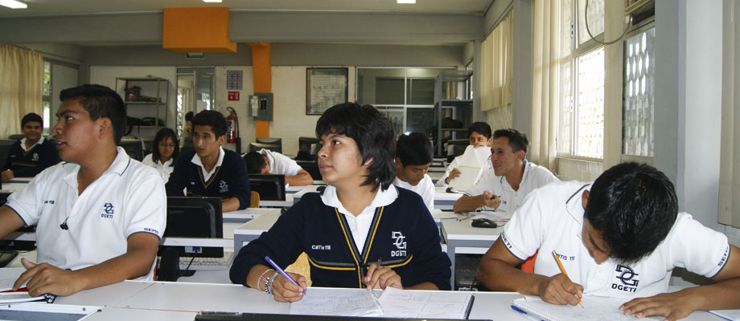

CARRERAS TECNICAS QUE SE IMPARTEN
- Dar mantenimiento a los sistemas mecanicos.
- Manejo de las maquinas y herramientas convencionales.
- Manejo de Maquinas de control numerico.
- Soldar piezas metalicas con arco electrico y oxigas.
- Procesos de ajuste de piezas mecanicas.
- Elaborar instalaciones electricas residenciales y comerciales
- Reparar y dar mantenimiento a motores y generadores de corriente continua
- Mantener en operacion los circuitos de control electromagnetico y electronico
- Mantener los sistemas de iluminacion y de energia renovable
- Mantener instalaciones electricas de media y baja tension
- Editar software integrado para la creacion de programa de aplicacion y diseno de base de datos
- Dise�ar sistemas de computo y servicios relacionados.(Desarrollo de programas aplicados al
manejo de bases de datos y .Net) - Editar y difundir contenido exclusivamente a traves de internet
- Realizar servicios de busqueda en la red y comercio electronico
- Desarrollar aplicaciones para telefonos celulares
MECANICA INDUSTRIAL
La carrera ofrece las competencias profecionales que permiten al estudiante:

LOGISTICA
La carrera en Log�stica ofrece las competencias profecionales que permiten al estudiante realizar actividades
dirigidas a la administraci�n de bienes,planificando los suministros destinados al almacenamiento de manera manual y
electronica,la organizacion de los nodos logisticos para el transporte de mercancias asi como,proveer los servicios
y atencion al cliente sobre los movimientos y los costos de la cadena logistica.

ELECTRICIDAD
La carrera de Electricidad ofrece las competencias profecionales que permiten al estudiante:
PROGRAMACION
La carrera de Programacion ofrece las competencias profecionales que permiten al estudiante: